We've reviewed the website & data for AgriTees and found the following opportunities that can improve conversion rate, AOV, and contribution margin per session for implementation consideration.
All recommendations are meant as experimentation considerations, not one-and-done implementations.
All changes should be measured and reviewed with an iterative approach. Each opportunity is a lever that can be optimized continuously over time.
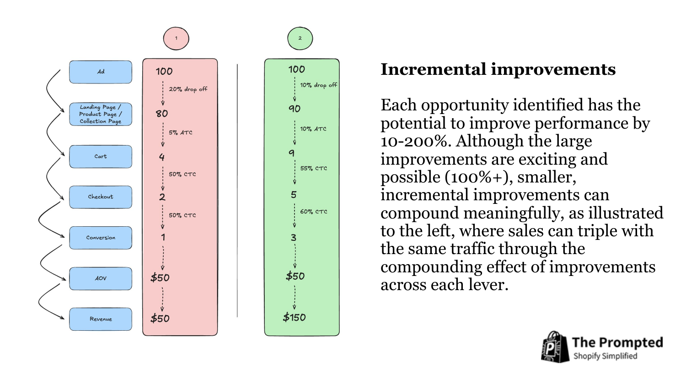
I repeatedly see less optimized stores, but with well crafted designs, sell 20x more than optimized stores with less effective designs (20 orders a day, roughly $30k a month, versus 500 orders a day, roughly $1M a month).
Designs carry a disproportionate amount of impact in POD.
On one hand that's a blessing, because it means if you master this one thing, you can print profits on demand.
On the other hand it's a curse, because getting to that level of mastery is seemingly easy on the surface, but much harder below. Kind of like shooting three pointers in basketball. NBA players make it look easy, but once you actually step on the court and try to do it yourself, you realize it's not as trivial as it looks.
So it's worth being deliberate about what goes into a design rather than trusting the idea that shows up. I'd say the strongest POD designs stack three things. A cultural moment people are already thinking about, so July 4th, Thanksgiving, Christmas. The niche itself, which for you is farm and homestead life. And optionally a second niche sitting next to it that the same person also belongs to.
Stacking that third one is where it gets interesting, because you stop competing with every other chicken shirt. Abe Lincoln playing guitar to celebrate July 4th is the kind of thing I mean. It's the holiday, it's a recognizable figure, and it's a music reference, so it catches three different reasons to stop scrolling instead of one.
Pick the next cultural moment on the calendar and build a 100-design run against it, using your best-performing niche angle with one adjacent interest layered on top.
Keep the adjacent niche genuinely adjacent. The test is whether the same person would claim both identities without thinking about it.
This is the part of the business I've spent the most time on, so rather than compress it here, these walk through the whole thinking:
Those videos use four skills that run in sequence, and together they're the process behind the design run above. These are the full versions, and each link goes straight to the download and the setup steps:
We typically curate colour options for POD apparel down to a handful, because every extra swatch is another decision you're asking someone to make before they buy, and decision fatigue costs you conversions.
Your product pages show eight, and about two thirds of your catalog carries more than six.
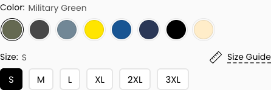
My agent pulled your last twelve months of sales by variant, so this isn't a guess. You sold 1,469 shirts across 18 colours, and five of them account for 82.3% of everything you sold.
| Colour | On listings | Units sold | Share |
|---|---|---|---|
| Military Green | 368 | 308 | 21.0% |
| Dark Heather | 385 | 301 | 20.5% |
| Black | 430 | 259 | 17.6% |
| Heather Indigo | 276 | 184 | 12.5% |
| Navy | 430 | 157 | 10.7% |
| Everything below: 17.7% of sales combined | |||
| Royal | 367 | 101 | 6.9% |
| Sand | 340 | 78 | 5.3% |
| Daisy | 65 | 29 | 2.0% |
| Light Blue | 13 | 10 | 0.7% |
| White | 30 | 10 | 0.7% |
| Purple | 40 | 6 | 0.4% |
| Asphalt | 39 | 2 | 0.1% |
| Red | 32 | 2 | 0.1% |
| Dark Chocolate | 21 | 1 | 0.1% |
| Orange, Coral Silk, Natural, Sport Grey | 1-4 each | 1 each | ~0% |
| Azalea, Jade Dome, Antique Cherry Red, Gray | 1-2 each | 0 | 0% |
Asphalt, Red, Purple and Dark Chocolate are the telling ones. They sit on 21 to 40 listings each, so they've had real exposure to real traffic, and between them they've sold 11 shirts in a year. That isn't a colour waiting to be discovered. It's a colour people keep seeing and keep not buying.
Royal and Sand are the two you'll feel. They do sell, and dropping them costs you something on paper. The trade is that the person landing on the page stops weighing eight options and picks from five, and the five they're picking from are the ones people already want.
Keep these five: Military Green, Dark Heather, Black, Heather Indigo, Navy. That's 82.3% of your sales on a third of the swatches.
Cut everything else, starting with the fourteen that barely register: Asphalt, Red, Purple, Dark Chocolate, White, Light Blue, Orange, Coral Silk, Natural, Sport Grey, Azalea, Jade Dome, Antique Cherry Red, Gray. Four of them have never sold a single shirt. Royal, Sand and Daisy come off too.
Order the swatches by what sells. Military Green first, then Dark Heather, then Black. Right now the highest converting option isn't necessarily the first one someone sees.
I'd review this once a season, since the best selling colour in July usually isn't the one that wins in November.
Your mobile product page runs about 9,530 pixels. That's roughly eleven phone screens of scrolling.
There is exactly one add to cart button, and it lives near the top. Once a customer scrolls past it, there is no way to buy without scrolling back up.
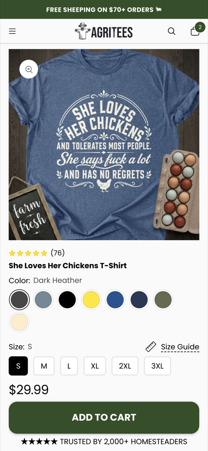
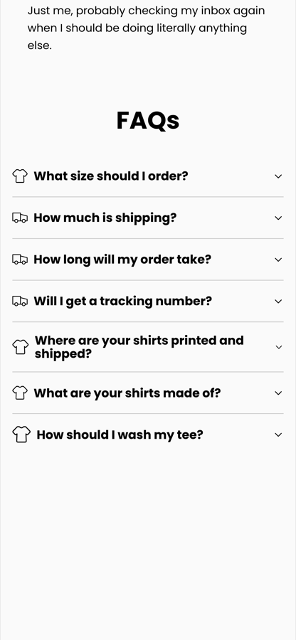
The irony is that everything below the button is doing its job. Your FAQ section, the brand story, the "Need Help? I'm Around" block. That content is persuading people. It's building the case for the purchase.
And at the exact moment it succeeds, there's no button.
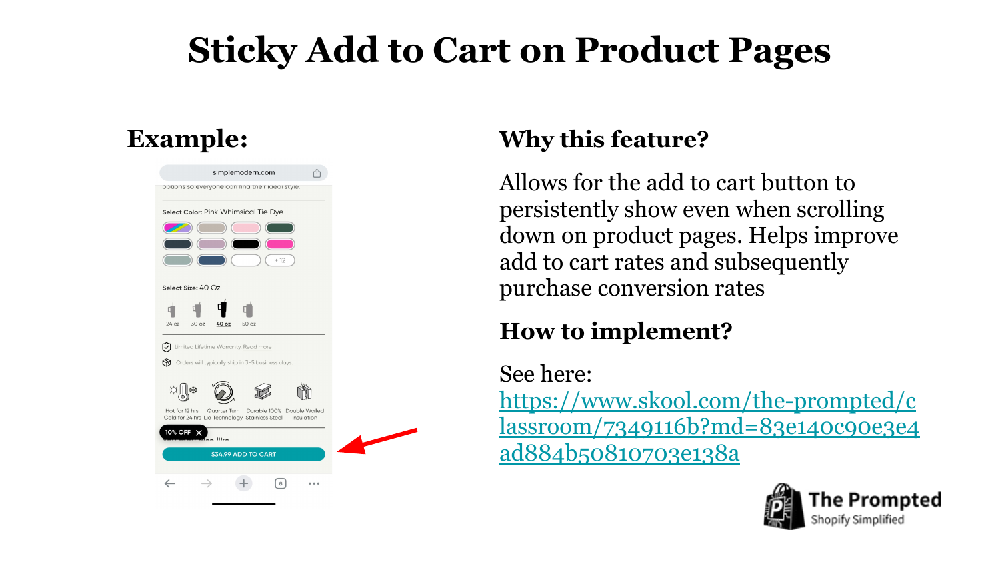
Add a sticky add to cart bar that appears once the main button scrolls out of view. It should show the product name, the price, the selected size, and the button.
Many themes include this as a toggle in the theme editor under product page settings. If yours doesn't, apps like Sticky Add to Cart Bar do it for a few dollars a month.
Prioritise mobile. That's where the page length hurts most and where most of your Meta traffic lands.
Walkthrough: Sticky add to cart in the Classroom, or the video version here.
Every product is $29.99 on its own. There's no "buy 2 save 10%," no bundle, no multi-pack, nothing that makes the second shirt feel like a better deal than the first.
You're already halfway there. Your collections are built around identities, "Chicken Math & Milestones," "Feral & Sassy," "Coop Life," which is exactly the structure that makes bundles obvious.
I'll give you the real numbers on this rather than the pitch, because I think the honest version is more useful. In a t-shirt store I've seen this run in, comparing the flat-pricing era against the tiered era, gross margin per order went from $26.22 to $33.68. That's up 28%, and units per order went from 1.88 to 2.12.
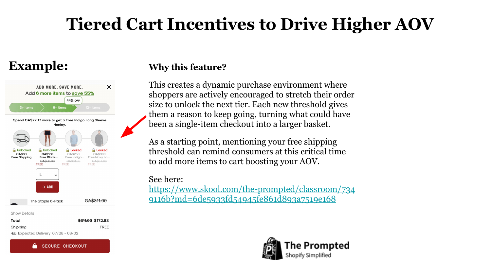
Keep the tiers shallow. Something like Buy 2 get 5% off, Buy 3 get 10% off, Buy 4 get 15% off works well without destroying margin. Deeper discounts buy a bigger jump that fades faster.
Walkthrough: Tiered cart incentives in the Classroom.
Right now your prices sit flat. A shirt is $29.99 and that's the whole story, so the number has nothing to be measured against and the shopper has no way to tell whether it's a good deal.
An anchor fixes that in one field. You set a compare-at price, the store shows the original struck through next to what they actually pay, and the discount does the arguing for you. Most stores selling in your range do this, and at $29.99 the usual anchor lands around $40.
You've already done it in a handful of places. My agent found 48 variants carrying a compare-at price, some at $42.84 against a $29.99 shirt, which is a 30% saving shown on the page. The other 16,300 have nothing. So this isn't a new skill to learn, it's a setting you've used and then stopped using.
Set compare-at price on the variants. In Shopify it's the field directly beside price. Bulk edit handles the whole catalog at once, so this is an afternoon rather than a project.
Keep it believable. Around $40 against a $29.99 tee. Anchors that are too far above the real price read as fake and cost you the trust the anchor was meant to buy.
Be consistent. A shopper who sees a struck-through price on one listing and none on the next reads the second as the more expensive shirt, even when it isn't.
I'm flagging up front that this one isn't a website change and it won't move your conversion rate. It's a traffic recommendation, and it's here because the asset is already sitting in your account.
Ads have a meaningful impact on conversion rate and AOV, and right now the creative diversity is lacking. Your top five ads account for roughly three quarters of your spend this year, so the account has very little to work with. One quick way to add diversity is to use what you already have, which is the photos attached to those 76 reviews.
They can run as-is without any edits. We see lo-fi, unedited photos perform well exactly as they are, and because you're running bid caps the risk to reward ratio is in your favour over a long enough window.
As someone who has built and sold a couple of POD brands, this works with the right creatives. It also gives the account something real to learn from, because Meta can read body shapes, skin tone and the general vibe of the content and serve it to the right people.
Pull the review photos you have rights to use and run them as-is against your current bid caps.
Turning on photo reviews in Loox feeds this pipeline permanently, so every future order becomes potential creative.
Walkthrough: the Ad Variety Workshop in the Classroom is the place to start on creative diversity.
Your cart already has the free shipping progress bar, with a filled indicator and copy in your own voice: "You're $40.01 away from free shipping. Chicken math says add another tee."
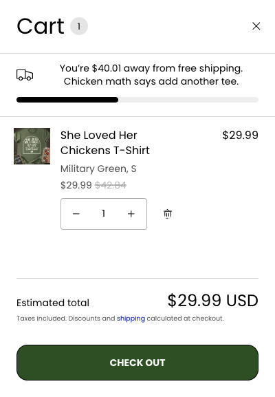
The gap is what happens after that sentence. You've just told someone to add another tee, and then you don't show them one. They'd have to close the cart, go find a second design, and come back.
The cart is the highest-intent page on your site. Everyone who reaches it has already decided they want a shirt, so it's the cheapest place you'll ever find to raise an order's value. Right now the ask is there and the means isn't.
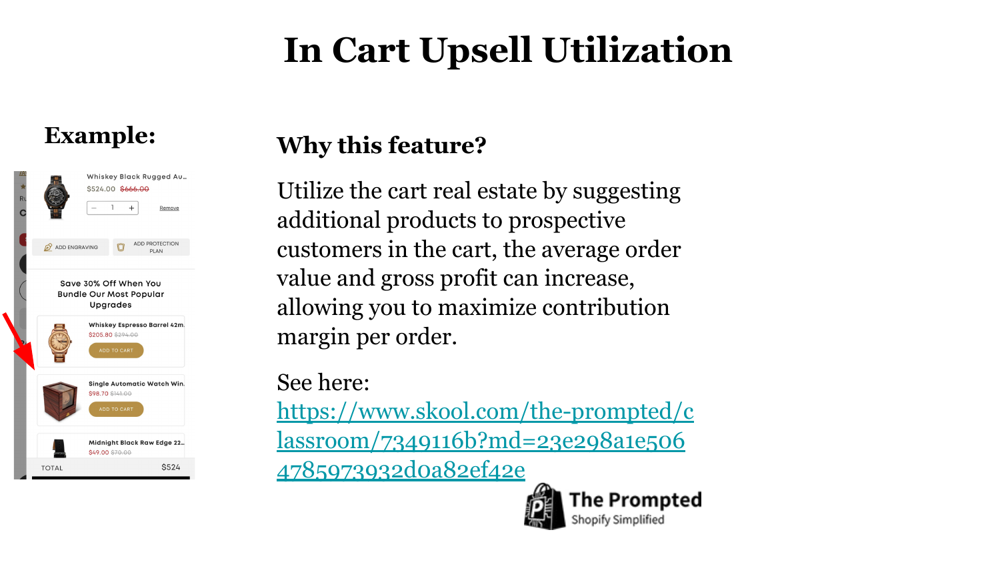
1. In-cart upsells. Show 3-4 products directly in the cart, above the checkout button. Not on a separate page, and not after checkout begins. Once someone clicks toward checkout their mindset shifts from browsing to completing.
2. Put them right under the progress bar. The bar creates the intent and the suggestions should answer it in the same glance, rather than sitting below the fold of the drawer.
3. Merchandise it with your own data. You know which designs sell together. Lead with your proven winners rather than a random feed.
Apps that do this well: Rebuy, Wiser, or a slide cart like Slide Cart Drawer. Budget 2-3 hours to set up, no code needed.
Walkthrough: In-cart upsells in the Classroom, or the video version here. For the upsells that sit directly under the add to cart button on the product page, see here.
Your hero says "Made for People Who Chose Different" with the subline "Inside jokes for chicken keepers. Worn by those who get it."
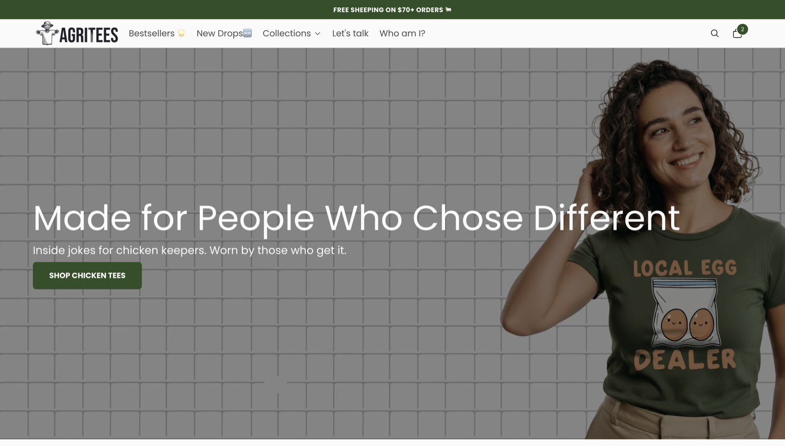
The voice is genuinely good and the positioning is clear. I wouldn't throw it away.
But the hero is the most-viewed real estate on your site, and right now it carries a mood rather than a reason to act today. Someone arriving cold gets identity, but no offer, no bestseller, and no proof.
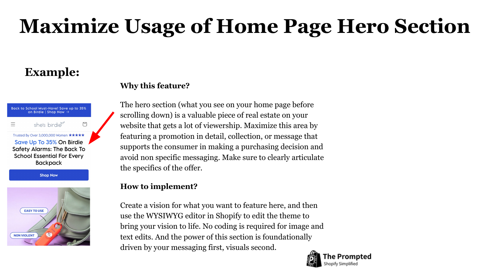
Keep your line as the smaller subhead and put the offer above it, stated plainly. Something like:
"Fall Sale: Up to 15% Off"
"Buy 2, Save 5%. Buy 3, Save 10%. Buy 4, Save 15%."
"Free Shipping Over $70"
"3 Tees, Free Shipping"
Then a button that says what happens next, so "Shop Chicken Tees" rather than "Shop Now", and your best-selling design behind it instead of a generic shot.
Rotate the offer with the season. Fall Sale becomes Black Friday becomes Christmas, and the hero is the one place a returning visitor will notice it changed.
Right after someone buys, on the thank-you page, before they leave your site, is the single highest-converting offer moment you have. They've already trusted you and already entered payment details.
A one-click post-purchase offer requires no re-entry of payment info and no new acquisition cost. Every dollar it earns lands on top of an order you'd already won.
Because you pay nothing to acquire that second item, an accepted upsell can be worth more than the profit on the original order.
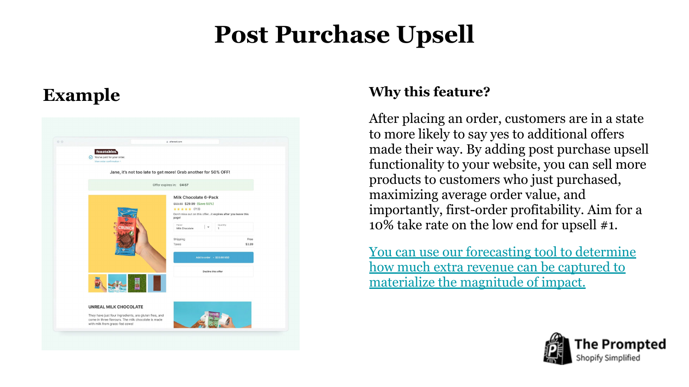
Apps: Zipify OCU or AfterSell.
Fill every slot you get. Use all the upsell and downsell slots the app gives you rather than stopping at one. Each empty slot is a free ask you didn't make, and someone who declines the first offer will often take the second.
Sequence them off what actually sells together. If design 1 tends to sell alongside design 2, put design 1 up as upsell #1 at a discount, design 2 as upsell #2, and keep going down the pairing list. Your order history already tells you these pairs, so you're not guessing.
Someone who just bought a chicken shirt is the most likely person on earth to want another chicken shirt, so keep the offers inside the same lane rather than reaching across the catalog.
Model the upside first: run your numbers through our post-purchase profit forecaster to see what a 10% take rate is actually worth to you before you build it.
You have GA4, the Meta pixel, and Klaviyo installed. You do not have Microsoft Clarity. My agent checked the page source and the tracking object directly.
Clarity is a free heatmap and session recording tool. It records real sessions so you can watch what people actually do, rather than inferring it from aggregate numbers.
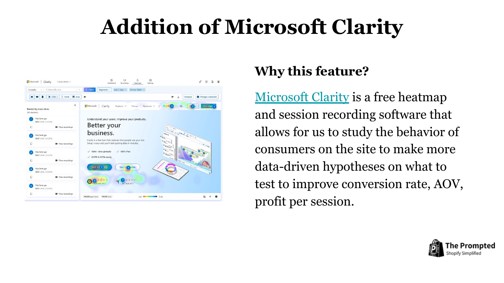
If you're wondering why traffic lands and doesn't convert, this is the tool that answers that specific question. Instead of guessing, you'd watch twenty sessions and see it.
Go to clarity.microsoft.com and create a free account.
Add the tracking code to your theme, or install the Microsoft Clarity app from the Shopify App Store, which is the easier path.
Within about 24 hours you'll have session recordings and heatmaps. Watch twenty sessions that didn't convert before you change anything else.
Set it up: clarity.microsoft.com. Free account, then drop the tracking code into your theme or install the Shopify app, which is the easier path.
Your publishing engine is genuinely good too. Building the habit of getting designs out consistently is the hard part, and you've built it. The recommendations above are about what goes into it, not how fast it runs.
Ordered by how quickly you'll know it worked. The top of this list is fast to do and hard to get wrong. The further down you go, the bigger the ceiling and the longer it takes to read the result.
Do them one at a time. If you change five things in a week you won't know which one moved.